Talent Intelligence Design System · SHL
Recruiters felt like they'd switched companies mid-task.
TC, iAssess, Reporting, Insights: four legacy tools, four different front-end frameworks, one recruiter workflow. I helped build the design system that replaced that patchwork with one shared language, tokens, components, and the governance to keep it that way.
- My role
- Design system contributor: audit, tokens, components, docs
- Team
- Product, Design, Engineering, Science & Solutions
- Scope
- Foundations for the new Talent Intelligence (TI) platform
- Platform
- Web · enterprise B2B SaaS
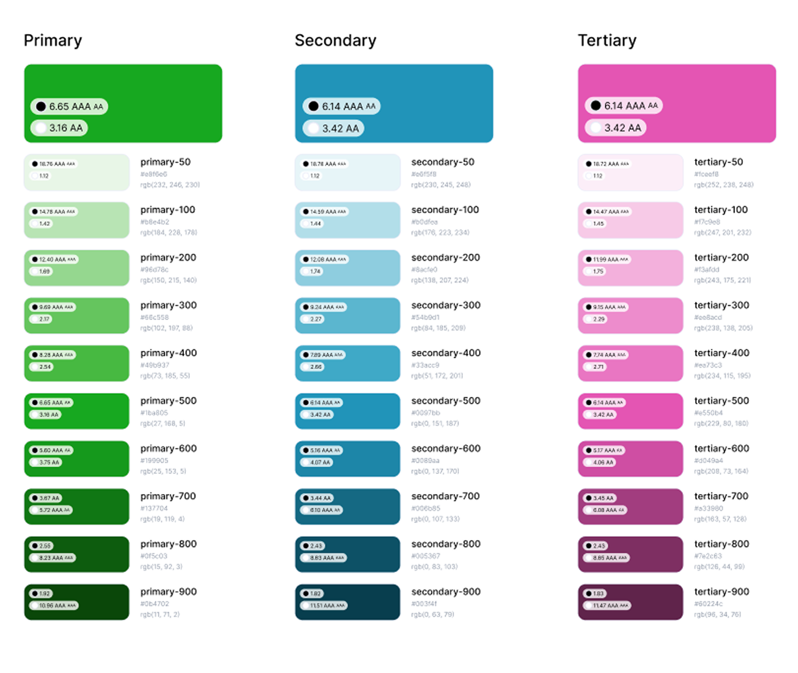
The color foundation the rest of the system was built on, every shade paired with its accessibility contrast score.
fragmented platforms unified into one design language
design system built from scratch alongside the new TI platform
accessibility built into tokens and components, not bolted on after
adapted, not reinvented, to save engineering months
The problem
Four platforms, four different decades of design decisions, one recruiter stuck switching between all of them.
TC for projects and candidates, iAssess for assessment delivery, Reporting, Insights for analytics: four platforms, four different eras of front-end decisions. A single hiring workflow could route a user through two or three entirely different interfaces.
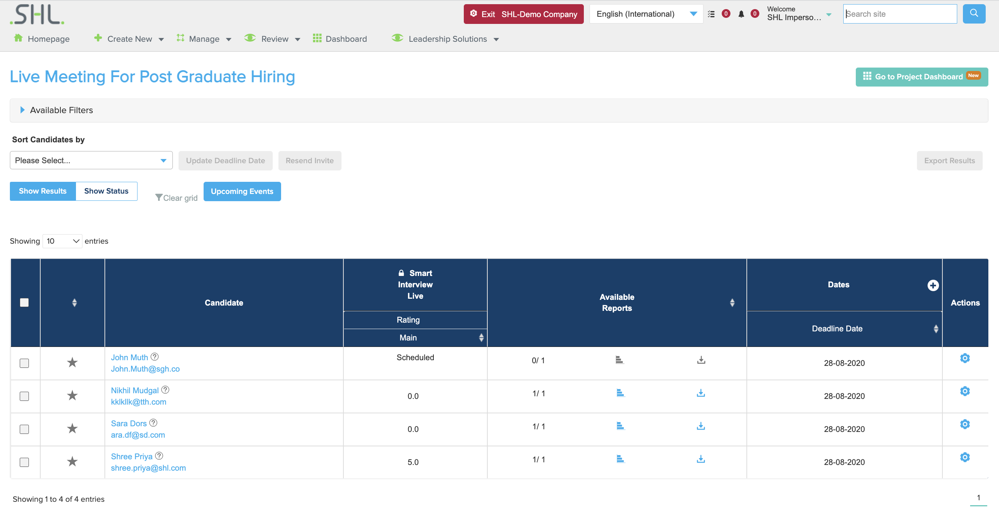
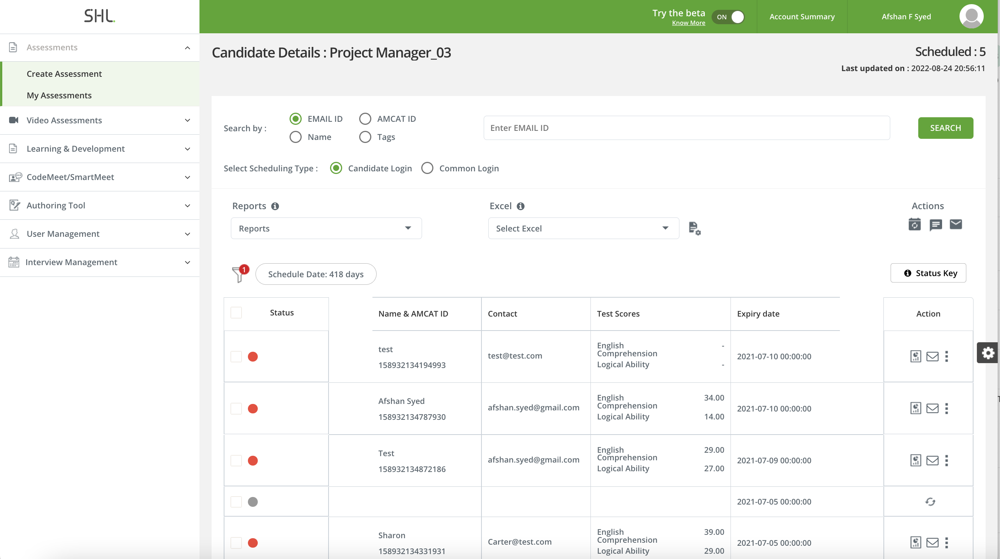
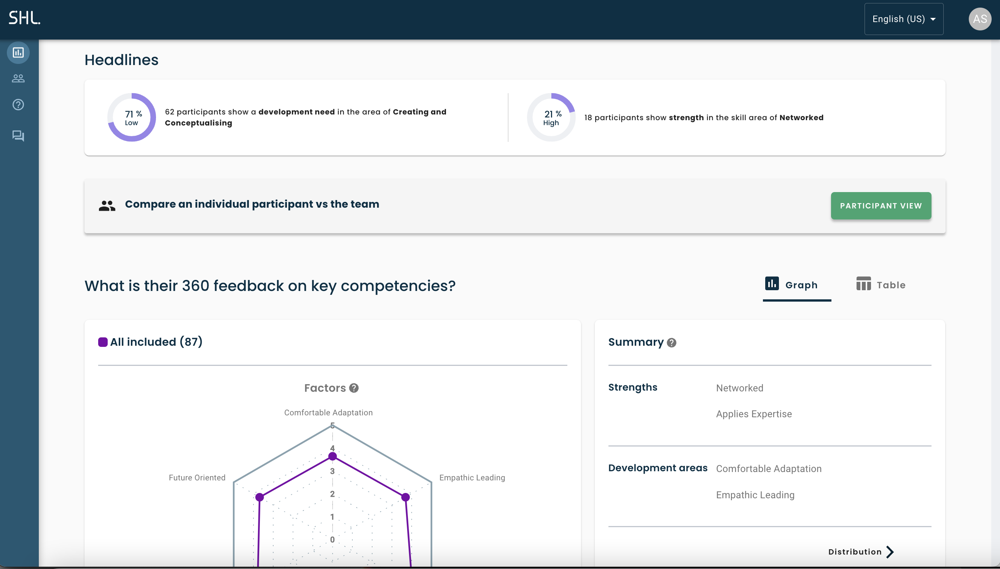
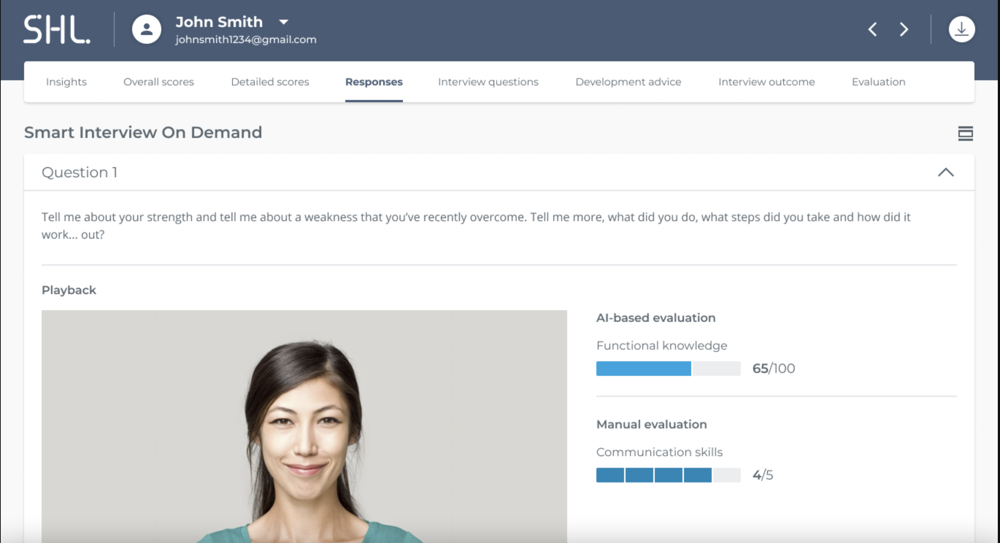
Four corners of one workflow, none of which agree on how a table, a button, or a chart should look.
The inherited landscape presented several obstacles:
- Multiple independent platforms with disconnected UI languages.
- Inconsistent accessibility and interaction patterns across products.
- Repeated design and development work, the same pattern rebuilt from scratch in every team.
- Confusion for end users navigating between dramatically different UIs, sometimes serious enough to read as a security concern, the interface changed so much it felt like a different company.
- Difficulty maintaining and scaling visual styles across product lines.
The move to a new TI platform was the opening to fix not just one experience, but how every future SHL experience would look, feel, and function.
My role
I joined the design system effort as part of a cross-functional team spanning Product, Design, Engineering, and Science & Solutions. My focus was the foundations recruiters and designers would actually touch every day.
- Audited the existing UI across TC, iAssess, Reporting, and Insights, cataloguing every inconsistency, accessibility gap, and duplicated pattern.
- Contributed to the design principles and token system that became the system's foundation.
- Built and documented components in the shared library, matched to Storybook so engineering could validate behavior against the design spec.
- Partnered with a dedicated engineering owner to keep implementation and design in sync as the system scaled.
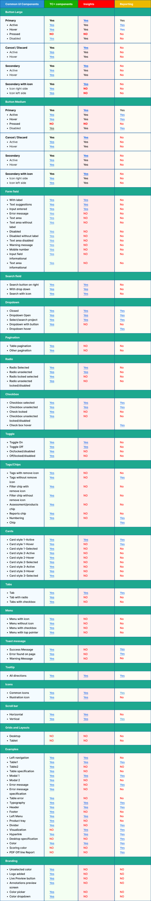
The audit I ran before writing a single token: every UI pattern across four platforms, mapped side by side.
The decision
Simply updating the existing platform wouldn't solve the deeper issues of consistency, performance, and scalability. So the call was made: build the new Talent Intelligence platform from scratch, and put a unified, scalable design system at its core.
Everything downstream, tokens, components, documentation, governance, exists because of that one call.
The approach
Two moves accelerated the system without sacrificing quality.
Start from what already works
We adapted Carbon Design System for its modular foundations and Material UI (MUI) for its flexible components, customizing for SHL's brand and workflows instead of reinventing elements that didn't need reinventing.
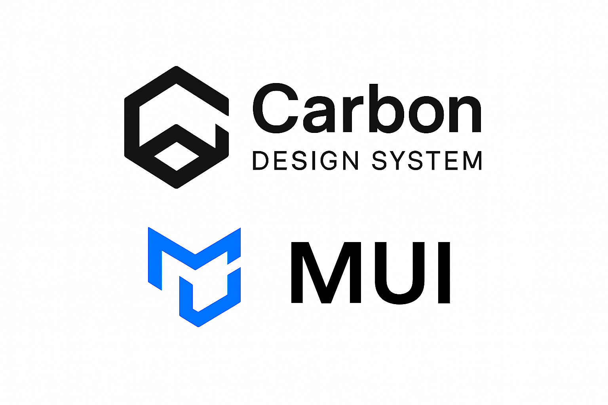
The two systems we built on top of, not the two systems we copied.
Define what "good" means for HR software, specifically
Generic design-system principles, "be accessible," "be consistent," don't capture what's actually at stake in HR tech. So the principles we set were specific to what SHL sells and who uses it:
Accessible by necessity, not by audit
Candidates complete assessments under high-stakes, sometimes legally-scrutinized conditions. WCAG 2.1 AA had to be built into tokens and components from day one, not caught in a later compliance pass.
Credible for high-stakes decisions
Recruiters and candidates make hiring calls on this surface. Every pattern had to read as authoritative and unambiguous, enterprise-grade, not consumer-cute.
White-label ready
SHL's enterprise clients routinely ask for their own branding on top of the platform. Every token and component was built to be re-themed per client, colors, logos, typography, without anyone touching the underlying system.
Scalable across a growing platform
Modular and reusable, built for mobile, tablet, and desktop, and expandable as TI absorbs more of SHL's product line.
Building the system
With principles set, the system took shape live inside the platform, not just documented in Figma.
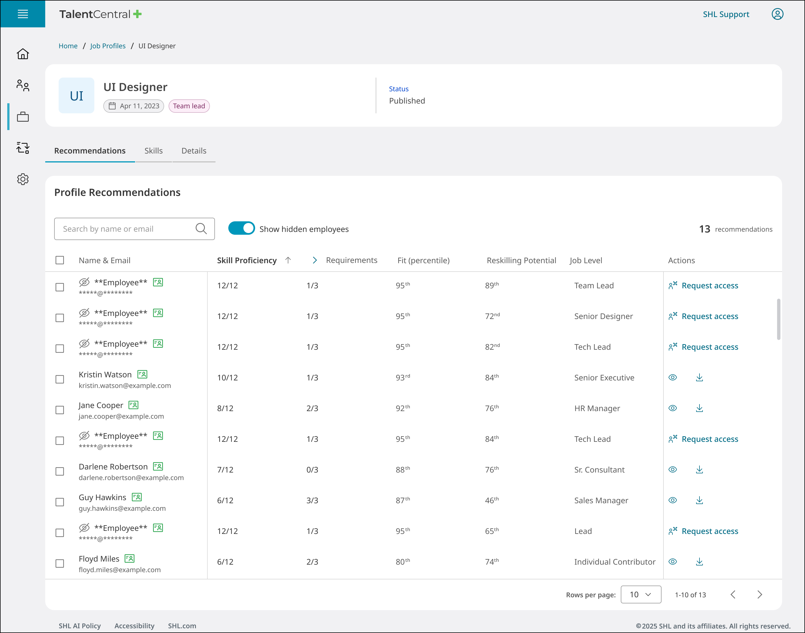
The system live inside TalentCentral+: the same tokens and components carrying through job-profile recommendations.
Modular component library
Accessible, documented, reusable components engineered against Storybook form the building blocks of the TI platform and every SHL experience after it.
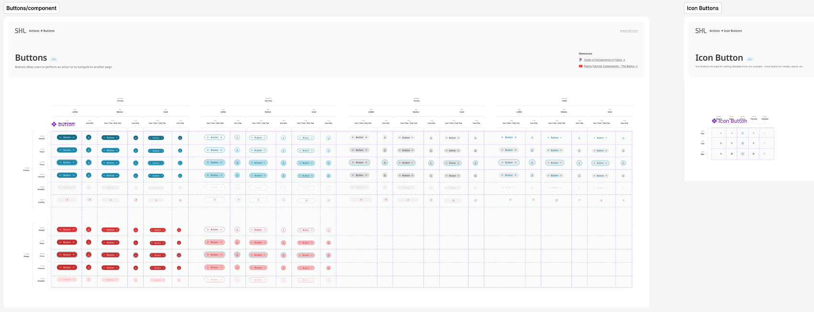
One button component, every state and variant it needs to ship, documented before an engineer ever touches it.
Interaction patterns: the hard calls, not the easy ones
Hover, focus, and disabled states were the easy 80%. The harder calls were things like picking one filter pattern that had to work whether a product exposed 3 facets or 30, and one table style that stayed legible from a 4-row summary card to a 900-row candidate list.
Component capture pending
Real filter-pattern / table-density comparison to replace this placeholder
Documentation & engineering
A system nobody can find or trust doesn't get used. Every component ships with its own documentation, so designers and engineers understand not just how to use it, but why it's built that way.
Usage guidelines
What a component allows, what it explicitly doesn't, and why, backed by do/don't examples so the rule isn't just a sentence in a doc nobody reads.
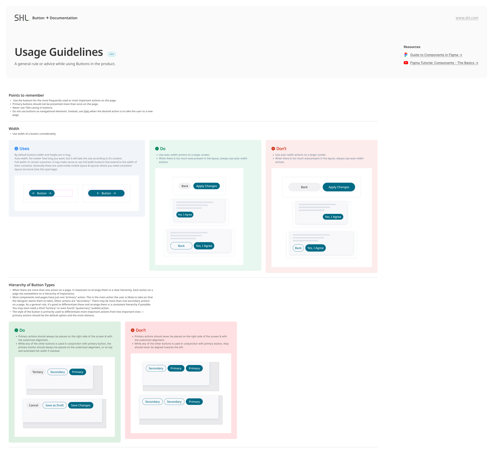
Do and don't, side by side, not buried in prose.
Variants & props
Every variant, size, and state a component supports, plus the full prop list with types and defaults, specified once so nobody has to guess or reverse-engineer it from the code.
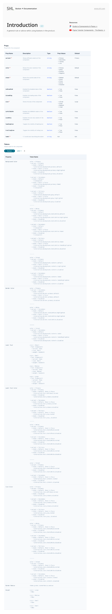
Props, variants, and container types in one reference.
Tokens
Naming runs two layers deep. A base scale names raw values, primary-500, secondary-200, each shade tagged with its contrast ratio. A semantic layer sits on top and names tokens by purpose: text-brand-primary, bg-button-primary_hover. Designers and engineers only ever consume the semantic layer, so re-theming a client's branding is a remap at the base layer, not a find-and-replace across every screen.
Component capture pending
Real token specification screenshot to replace this placeholder
Collaboration with engineering
A design system is a cross-functional product, not a design-only project. We aligned tech leadership early to share ownership, set up Storybook as the single source of truth for validating components and interaction behavior, and assigned a dedicated engineering owner, which accelerated implementation and kept governance consistent.
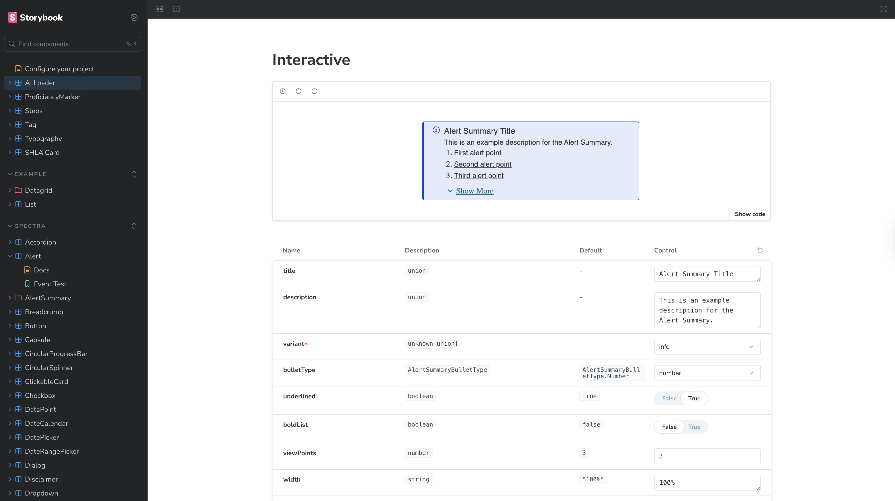
Storybook as the shared source of truth: the same component spec designers reviewed and engineers implemented against.
Impact
Before — every platform its own visual language, its own rules.
After — one token set, one component library, running live in TalentCentral+.
aligns Product, Design, Engineering, and Science & Solutions on one shared system
reusable components and predictable patterns shortened build cycles
higher quality and accessibility standards, reducing errors and improving long-term stability
Beyond speed, the system built something harder to quantify: trust. The same button, the same error state, the same filter, now behaving identically everywhere a recruiter or candidate encounters it.
Reflection
Cross-functional, not design-only
Tech leadership alignment mattered as much as any token.
Real workflows, not hypothetical ones
Building against Talent Management kept the system grounded, not a components-for-their-own-sake exercise.
Adapt, don't reinvent
Carbon and MUI were the single biggest accelerant to quality and delivery speed.
Governance is the hard part
Without clear ownership, a design system deteriorates the moment its authors stop watching it.
Consistency is what builds trust, internally between teams, externally for whoever uses what we ship. More than a component library, it became the strategic foundation the rest of SHL's Talent Intelligence ecosystem builds on.